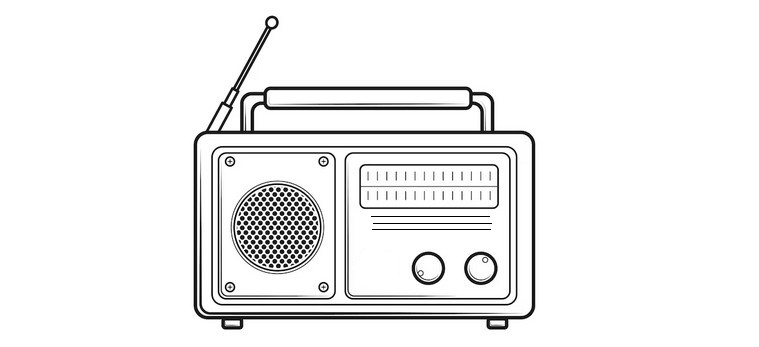

Chapter 6: Memory Beyond Brain Function
"Before I formed you in the womb I knew you, before you were born I set you apart." — Jeremiah 1:5
Okay, let's talk about something that's going to really mess with your head.
If memories are just physical traces in your brain—neurons firing, synapses connecting, molecules storing data like a biological hard drive—then how on earth can people remember past lives? How can someone who's been clinically dead with a completely flatlined brain come back with crystal-clear memories of what happened while they were "gone"?

Here's the thing: They shouldn't be able to. According to everything we've been taught, it's impossible. Memories = brain activity. No brain activity = no memories. Simple math, right?
Except... it keeps happening. And the evidence is piling up so high that even the most hardcore materialists are starting to squirm in their seats.
And you know what? That's exactly what consciousness and memory are turning out to be.
When Dead Brains Remember Everything
Let me introduce you to one of the most mind-bending phenomena in medical science: terminal lucidity.
Picture this: Your grandmother has advanced Alzheimer's. For years, she hasn't recognized you. Her brain has literally deteriorated—neurons dead, memories supposedly erased forever. According to neuroscience, those memories are gone. Deleted. Like a hard drive that's been physically destroyed.
Then, hours before she dies, something impossible happens.
She suddenly looks at you with clear, focused eyes. She calls you by name. She asks about your kids, remembers their birthdays, recalls that funny story from twenty years ago. For an hour, maybe two, she's completely herself again.
Then she dies.
Dr. Michael Nahm has documented hundreds of these cases. Patients with brains so deteriorated that memory should be neurologically impossible suddenly snap back to full consciousness—recognizing family, carrying on coherent conversations, recalling intricate details from decades past. And we're not talking about days or weeks before death. Sometimes it's just minutes.
So where were those memories hiding? If the neurons that supposedly stored them were physically destroyed, how did grandma access them?
Unless... they were never stored in the brain to begin with.
Four Smoking Guns That Memory Isn't Brain-Based
Alright, terminal lucidity is wild. But it's just the beginning. Let's look at four more pieces of evidence that should not exist if the brain is the only place memories live.
1. Dead People Who Remember Everything
We covered NDEs in Chapter 4, but let's zoom in on the memory aspect. These are people who are clinically dead. Flat EEG. No brain activity whatsoever. According to science, lights out, nobody home.
Yet they come back with memories more vivid than anything they experienced while alive. Dr. Sam Parnia's AWARE studies documented cardiac arrest patients who could describe exact details of their resuscitation—conversations, medical equipment, events happening in the room while their brains were literally offline.
Anna Morales was dead for six minutes. DEAD. Flatlined. Brain showing zero activity.
When she came back, she described floating above her body and watching the whole resuscitation. But here's where it gets crazy: She recalled the exact defibrillator setting (200 joules), a nurse dropping a metal clamp, and—get this—a cartoon sticker on the anesthesiologist's goggles.
CCTV footage and medical logs confirmed every single detail. The sticker? A tiny SpongeBob that nobody would notice unless they were literally looking down from the ceiling.
Explain that with neurons and synapses. I'll wait.
What's even more fascinating is how NDErs in their ninetees will remember the most intricate details of a near-death experience that happened forty years earlier, with almost no aspect of the experience forgotten, even though they may forget the names of their grandchildren! How interesting. Another clue to where memories reside.
2. Hearts That Remember (Yes, Really)
This one sounds like science fiction, but it's extensively documented. Heart transplant recipients wake up from surgery with completely new personalities. New food cravings. New talents. New memories—memories that belong to their donor.
Dr. Gary Schwartz at the University of Arizona has catalogued dozens of these cases. We're talking about people who suddenly love foods they previously hated, speak languages they never learned, and have vivid flashbacks to events they never experienced—events that turn out to be memories from their donor's life.
Kiera Johnson was a typical teenager. Hated vegetables, couldn't carry a tune, never touched a piano in her life.
Then she got a heart transplant.
The donor? Miles Carter, a classical pianist who lived and breathed music.
Weeks after the surgery, Kiera started craving tomato basil soup—Miles's favorite dish, though Kiera's family had never made it. Then one day, she sat down at her aunt's piano and played Chopin's Nocturne Op. 9 No. 2. Perfectly. By ear.
Miles's parents came to meet her. They were sobbing. "That was his favorite piece," they said. "He played it at every recital."
So tell me: How does a heart remember how to play piano?
3. Toddlers Who Remember Lives They Never Lived
We touched on this briefly in Chapter 5, but let's examine this closer. Kids—we're talking 2, 3, 4-year-olds—describing people, places, and events from lives they supposedly lived before they were born. And not in vague, "I was a princess" kind of way. Specific, verifiable, checkable facts.
Facts that turn out to be 100% accurate.
Liam Nguyen was a normal Denver kid. Except he kept drawing the same thing over and over: A building with a golden roof next to a river with a weird hook in it.
"That's my house," he'd say. "When I was Than Htoo."
His parents—American-born, never been to Myanmar—had no idea what he was talking about. So they showed him photos of temples around the world. He immediately pointed to Yangon's Shwedagon Pagoda. "That's it! That's my house!"
Then it got weirder. A Burmese exchange student visited, started chatting with Liam in Burmese—a language this Denver kid had never heard. He answered correctly.
Researchers dug into records. Turns out a novice monk named Than Htoo drowned in that exact river bend—the one with the hook—in 2004. Three years before Liam was born.
How does a toddler in Colorado remember drowning in Myanmar in a previous life?
4. The Guy Who Hit His Head and Became a Genius
Okay, this one is wild. Acquired savant syndrome—when someone suffers a head injury or neurological event and suddenly gains abilities they never learned. We're not talking about getting better at math. We're talking about waking up and being able to play concert-level piano despite never having taken a lesson in your life.
According to mainstream neuroscience, this should not be possible. Skills require learning. Learning requires practice. Practice creates neural pathways. You can't just download abilities like Neo in The Matrix.
Except... apparently you can.
Marcus Reed was a construction foreman. Tough guy. Never played an instrument. Didn't even particularly like music.
Then he fell off a ladder. Concussion. Nothing too serious—or so they thought.
A week later, Marcus walked past a piano in a hotel lobby. Something in him just... knew. He sat down and started playing complex jazz improvisation. Bebop. The real deal. Like he'd been doing it for decades.
Neurologists were baffled. They recorded his performances, analyzed his brain scans, confirmed what shouldn't be possible: overnight mastery of an incredibly complex skill.
When they asked Marcus how he knew what to play, he said something that gives me chills: "The music was just waiting. My fingers knew where to go."
Waiting where, Marcus? Where was it waiting if not in your brain?
So Where Are Memories Actually Stored?
Great question. And scientists who aren't terrified of losing their tenure are starting to propose some fascinating alternatives to the "brain = hard drive" model.
- 1Holographic Memory - Neurophysiologist Karl Pribram suggests memories might be stored like holograms—distributed everywhere and nowhere at once, connected to a larger field beyond the brain.
- 2Morphic Resonance - Biologist Rupert Sheldrake proposes that memories live in "morphic fields" that exist beyond your body. Your brain doesn't store memories; it tunes into them.

- 3Quantum Memory - Quantum physics concepts like entanglement and non-locality might explain how consciousness and memory transcend space and time. Your memories could be literally everywhere at once.
- 4The Akashic Field - An ancient concept that's getting new scientific attention: What if there's an information field that records everything—every thought, every experience, every moment—and consciousness can access it under the right conditions?
Notice something? These models sound a lot more like ancient spiritual wisdom than modern neuroscience. That's not a coincidence. Science is finally catching up to what mystics, sages, and—yes—Jesus have been saying all along:
It seems more than reasonable to, as we've pointed out previously, accept the reality that Consciousness isn't produced by the brain. The brain is just the radio that tunes into it.

Jesus Knew This All Along
Here's something that'll make you go "hmm": Jesus talked about having memories from before he was born.
When he prayed, "Father, glorify me in your presence with the glory I had with you before the world began" (John 17:5), (taking the text at face value) he was referencing memories that existed beyond his current brain. Memories from before his physical incarnation.
If memories are just neurons and synapses, how does that work? It doesn't. Unless consciousness and memory exist beyond the physical brain. It seems more likely that Jesus was pointing to accessing knowledge from beyond ordinary consciousness. Insights from a field of awareness, as it were—wisdom that's always there, waiting for you to tune into it.
What This Means (And Why It Changes Everything)
Alright, let's connect the dots. If memories aren't confined to your brain, then:
1. You are not your brain. Consciousness exists independently. Your brain is more like a transceiver—receiving and transmitting consciousness, not generating it.
2. Death doesn't erase you. Your memories, your personality, your identity—all of it continues beyond physical death. The radio breaks, but the signal keeps broadcasting.
3. You have access to wisdom beyond this lifetime. That gut feeling? That intuition? That random insight that feels like it came from nowhere? Maybe it came from the field. You're tapping into knowledge that transcends your current life.
4. We're all connected. If consciousness is a field we all access, then your individual awareness is part of something much, much bigger. You're not isolated. You're interconnected with everything.

- Consciousness produced by brain activity
- Memories stored in neural connections
- Death = game over for consciousness
- Knowledge limited to this lifetime only
- Consciousness exists beyond the brain
- Memories accessed from consciousness field
- Death = changing channels, not ending the show
- Knowledge accessible across lifetimes
Look, this doesn't mean your brain doesn't matter. Obviously it does. In physical existence, your brain is crucial for accessing and expressing consciousness. But it's not the source.
Jesus may have hinted at this.
Guidance from beyond ordinary consciousness. Connection to a larger field of awareness and memory that transcends your physical brain.
You're not just a body with a brain. You're consciousness using a body with a brain.
So What Do We Do With This Information?
Understanding that memory transcends the brain opens up incredible possibilities:
Meditation, prayer, contemplative practices—these aren't just relaxation techniques. They might actually be portals to accessing deeper knowledge from the field. Wisdom from beyond your current lifetime. You're not making stuff up during meditation; you're tuning in.
And here's something beautiful: This perspective offers real hope for people dealing with Alzheimer's and dementia. The core person—the real them—isn't lost. They're just temporarily unable to access the frequency due to their brain's condition. But they're still there, in the field, whole and complete.
Remember grandma becoming herself again before she died? She was always there. She just found a way back to the signal.
Putting It All Together
So here's where we are: Consciousness isn't confined to your physical body. It transcends space (as we saw with NDEs) and time (as we saw with reincarnation). And now we know it transcends physical storage too—your memories don't live in your neurons. They live in the field.
This isn't New Age fluff. This is what the evidence is showing us. And it aligns perfectly with what Jesus taught about our spiritual nature and eternal identity.
You're not a temporary meat machine that blinks out of existence when your brain stops. You're eternal consciousness having a human experience. Your memories, your identity, your essence—all of it continues.
Death is just changing the channel.
In the next section, we're going to explore what all of this means for understanding who you really are. Not the limited you that's defined by your body and personality, but your higher, divine nature.
The you that remembers everything.
Buckle up. This is where it gets really good.